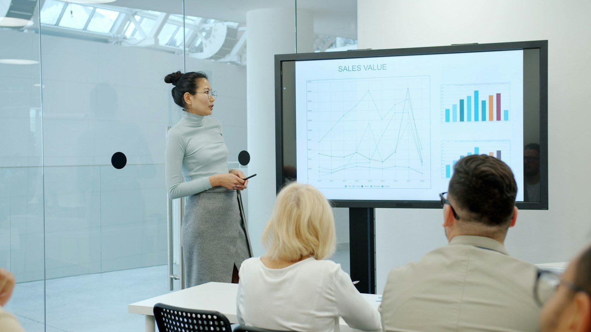
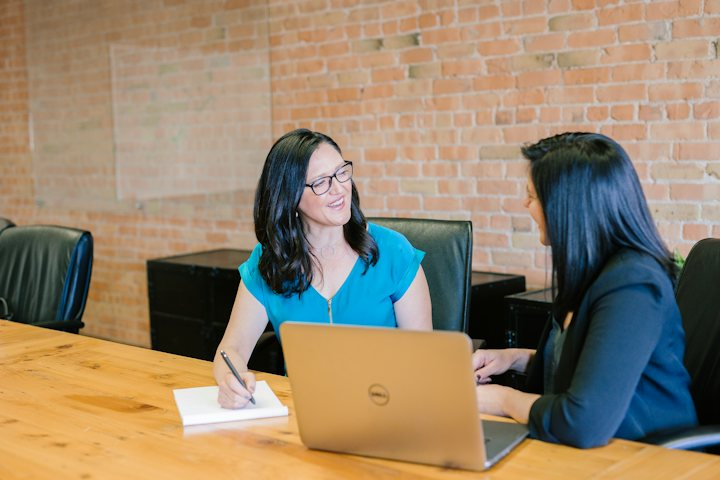
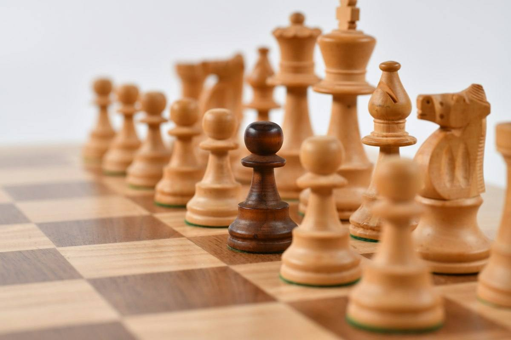
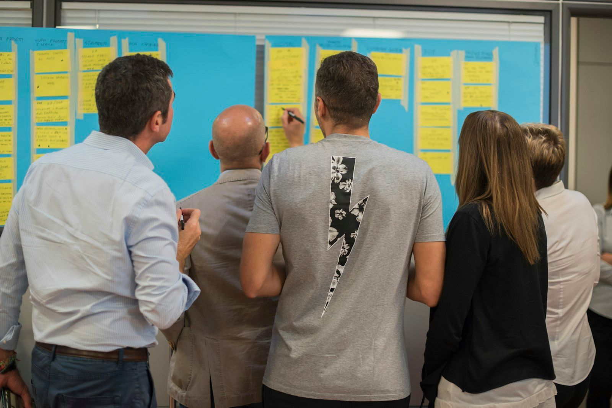

Warm-up · The scoreboard

Rate yourself from 1 to 5 on each one. Then say your strongest and your weakest. At the end of the class we compare your guess with what you can really do.
My scoreboard: 1 = I need help · 5 = I can teach it
Total 0 / 35Teacher notes · §1 Warm-up
Pedagógica
- Autoevaluación de los 7 puntos de lengua de Block 2 (1 a 5). El alumno DEBE decir en voz alta: "My strongest is … because … My weakest is … because …" antes de seguir; el botón "I said it" solo aparece después de bloquear la tabla. No corrijas aún: el quiz de §4 contrasta la autoevaluación con el resultado, sesión por sesión.
- Línea del desacuerdo del checkpoint: unos dicen que revisar es repetir lo que ya sabes; otros dicen que revisar es descubrir lo que creías saber. Hoy lo decide el mapa de sesiones débiles.
- Máximo 4 minutos. Sin material nuevo: es un checkpoint. Tema: Seguro. Temperatura: Mild.
Engagement
- "Siete sesiones. ¿Cuánto de esto ya es tuyo?" Pide primero el número y luego la frase en inglés.
- Si el alumno se pone 5 en todo: pídele un ejemplo de la semana donde lo usó sin ayuda.
Crecimiento
- Guarda la autoevaluación: la comparación contra el quiz es dato de calibración (¿sobreestima o subestima?).
- Riesgo: Seguro. Temperatura: Mild.
Vocabulary · Describe It

Describe It
Points 0 / 24Cards 0 / 81. The describer taps “Show my word”. Only the describer sees it. 2. You have 20 seconds to explain the word in English. Never say the word or the red words. 3. Your partner guesses. Guessed = 2 points. 4. +1 if your explanation used a Block 2 pattern (“The …-er, the …-er”, “While …”, “If …, we’ll …”, “good at …ing”, “It’s better to … than to …”).
Partner
The eight words with Spanish and session
lead time = tiempo de entrega (S9) · trade-off = algo a cambio de algo (S9) · shortcut = atajo (S10) · embarrass = avergonzar (S11) · trigger point = punto de activación (S12) · hidden cost = costo oculto (S13) · misunderstanding = malentendido (S14) · human error = error humano (S15)
Teacher notes · §2 Vocabulary
Pedagógica
- VOC-07 Describe It (OCULTAMIENTO): ocho palabras de Block 2 (S9 a S15). Solo quien describe ve la palabra; el compañero adivina. 20 segundos, sin decir la palabra ni las tres palabras rojas. Adivinar = 2 puntos; +1 si la explicación usó un patrón de Block 2. En grupo: parejas en breakout, se alternan; en 1:1: el alumno describe cuatro y tú describes cuatro (el alumno adivina).
- escalation_note (la dinámica vuelve de S6): en S6 se describía una palabra suelta del bloque. Ahora son ocho palabras de siete sesiones y la explicación debe llevar un patrón gramatical de Block 2 para ganar el punto extra. Prueba del micrófono apagado: no hay forma de puntuar sin hablar.
- Léxico del checkpoint: solo recuperación de lo ya visto; no hay palabras nuevas. Si una palabra se atora (p. ej. trigger point), anótala para el repaso, no la expliques en el momento.
Engagement
- "Veinte segundos. Habla sin parar." Cuenta en voz alta los últimos cinco.
- Cierra con el resultado en voz alta: "We got __ points; the hardest word was …"
Crecimiento
- Anota qué palabras no pudo describir: son candidatas para el repaso de S17 y del quiz final.
- Venta: Describe It funciona con el vocabulario propio de cada planta.
Grammar · Correction Bounty

Block 2 on one screen
The Correction Bounty
Bounty 0 / 240Fixed 0 / 81. Each message has one typical mistake from Block 2. It has not been sent yet. 2. Say the corrected message out loud. 3. Tap “Show the fix” to check. 4. Each bounty is 30 points. A hint costs 10.
Plant a mistake. Your partner repairs it
Repaired 0 / 3Say it, then repair it
Say one sentence about YOUR work with that pattern. Put ONE mistake in it. Your partner says the repaired sentence.
Teacher notes · §3 Grammar
Pedagógica
- Sin punto nuevo. Cuadro "Block 2 on one screen": siete patrones, uno por sesión; el botón 🔊 usa la voz del navegador (el audio final se graba en ElevenLabs).
- GRM-04 The Correction Bounty (ELIMINACIÓN), etapa mecánica/controlada, versión ADN: ocho mensajes "sin enviar" con el error típico de cada sesión (dos de S9). El alumno dice el mensaje corregido en voz alta ANTES de ver la corrección; cada mensaje vale 30 puntos y la pista cuesta 10. Es "repáralo antes de enviarlo": no hay huecos ni opciones. escalation_note (vuelve de S8): en S8 se tocaba la oración correcta entre opciones; ahora se corrige hablando y sin opciones.
- Etapa comunicativa ("Plant a mistake"): el alumno saca un patrón al azar, dice una oración propia sobre su trabajo con UN error plantado y el compañero la repara en voz alta. Tres rondas. La práctica controlada (bounty) no pasa de un tercio del tiempo del bloque.
- Errores prioritarios: more cheap, enough strong, better say, if … will, more it costs, while … but, instead to. Sin would/should/could ni hipótesis (S25).
Engagement
- "Tú eres el editor: el mensaje no salió todavía."
- En el turno del alumno, gana quien planta el error más difícil de ver.
Crecimiento
- Anota qué sesión falló en el bounty: se suma al mapa de sesiones débiles del §4.
- Venta: el bounty se arma con los errores reales del grupo.
Review Quiz 2 · Sessions 9 to 15

20 situations · Sessions 9 to 15
Said 0 / 201. Read the situation. 2. Pick the message that really works in that situation. 3. Say it out loud like a real message, then tap “I said it”. 4. In a group, work in pairs: one picks, the other says.
Teacher notes · §4 Review quiz
Pedagógica
- Quiz de repaso de Block 2: 20 situaciones (3 por sesión de S9 a S14 y 2 de S15), cada una con tres mensajes completos y reales. El alumno decide cuál logra el resultado y lo dice en voz alta; no hay huecos ni preguntas literales. El orden de las opciones se mezcla. Cada situación lleva la etiqueta de su sesión para armar el mapa.
- Banda: 17–20 listo para Block 3 · 13–16 casi (repasa las sesiones marcadas) · menos de 13 repaso antes de S17. El resultado combina el quiz con el Correction Bounty (§3) y compara contra la autoevaluación del §1.
- No des pistas durante el quiz; solo después del resultado. Las opciones incorrectas son inglés correcto que no logra el resultado (no se modelan errores).
- Sin listening nuevo en el checkpoint (como S8): la comprensión se demuestra decidiendo y diciendo el mensaje.
Engagement
- "No es un examen: es un mapa de lo que ya sabes."
- Si hay grupo, que cada uno diga su sesión más débil al terminar.
Crecimiento
- Registra el puntaje por sesión: alimenta el plan de repaso individual y el quiz abarcativo de S32.
- Venta: informe automático de calibración (autoevaluación vs. resultado).
Speaking · Personal Record
1. Choose a topic. 2. Speak English without stopping and without Spanish. A pause over 4 seconds ends the try. 3. Press Stop when you finish. 4. Three attempts: the third has a new condition. Your Session 8 record: not found on this device. Goal: 60 seconds.
Stopwatch
You answered this in Session 1. Answer it again
Now add what you can do today: compare two solutions, name a cost or a risk, give a Plan B and decide.
12 questions · always 2 follow-ups
Teacher notes · §5 Speaking
Pedagógica
- SPK-08 Personal Record (CONTRARRELOJ): habla sostenida sin español y sin pausa mayor a 4 segundos. La marca de S8 (si el alumno la fijó en este mismo navegador) aparece arriba. Meta de hoy: 60 segundos. Tres intentos; el tercero lleva una condición nueva: debe incluir un riesgo y un Plan B (The risk is …, If …, we’ll …). Se guarda el mejor intento. El oyente vigila pausas y español; en 1:1 vigilas tú sin interrumpir.
- escalation_note (la dinámica vuelve de S8): en S8 la meta era ~45 s sobre cualquier tema. Ahora la meta es 60 s, los temas son de Block 2 y el tercer intento exige estructura (riesgo + Plan B). El punto se gana por producir lengua, nunca por hablar más rápido.
- Before and now: se repite la pregunta de S1 (What is the biggest problem in your daily routine?). Compara con lo que el alumno decía entonces: ¿ahora compara, nombra costo/riesgo y da un Plan B? Después, las 12 preguntas de la baraja (la primera es la de S1) mantienen la conversación activa.
- Frases de rescate visibles: The trade-off is … · If …, we’ll … · It’s better to … than to …. Usarlas cuenta a favor. Anota 2 aciertos y 3 errores para el §7.
Engagement
- "Tu récord es tu rival. En S8 lo fijaste; hoy lo rompes."
- Celebra el mejor intento, no el primero.
Crecimiento
- Registra la marca de S16 junto a la de S8: es el dato de progreso más fuerte del checkpoint.
- Venta: un 'récord personal' visible por alumno es argumento de renovación.
Mission · The Monday Decision Room
The Monday Decision Room
You lead a small team. Three decisions arrive on Monday morning. For each one, give a brief with the language of the whole block: compare the options, name the cost over time or the risk, give a Plan B or split the work between tool and person, and decide.
Group: each case goes to one student in a breakout room. Your partner asks “What is the risk?” once per case. Rotate every 3 minutes.
1:1: you brief the teacher. The teacher asks “What is the risk?” once per case.
Success: 3 briefs, each with a comparison, a cost or risk, a Plan B or a split of roles, and a decision with a reason.
Choose one case. In 60 seconds, defend your decision again with the new budget. No cards, no reading.
Teacher notes · §6 Mission
Pedagógica
- Misión del checkpoint: tres casos nuevos (máquina de empaque, visita de auditoría, operador nuevo) que mezclan todo Block 2. Marca cada movimiento solo cuando el alumno lo dice sin leer la tarjeta.
- Evidencia observable: comparación (-er than / while / whereas), costo en el tiempo o riesgo (The longer …, the more … / The risk is …), Plan B (If …, we’ll …) o reparto herramienta/persona (good at …ing / instead of …ing) y decisión (It’s better to … than to …). La clave está en Teacher view. Las cifras de los casos son ficticias.
- Segunda toma con condición nueva: el presupuesto baja 30% y hay que quedarse con UNA decisión; 60 s sin mirar tarjetas. Esa toma es la evidencia individual sin apoyos: anota en el Registro si se logró.
- No interrumpas: el feedback va en §7.
Engagement
- Anuncia en voz alta: "__ of 12 moves. Brief delivered!"
- Si alguien solo describe y no decide, pregunta "What is your decision?" una vez.
Crecimiento
- "In Session 17 we start Block 3: recommend and propose."
- Conecta con S32: el quiz abarcativo y la misión final vuelven a este tipo de informe.
Wrap-up · Checkpoint complete
✓ Success
↑ Upgrade
✎ Repair
↻ 2nd try
Repeat one brief with the teacher. Use the upgrades. Same task, better English.
60 seconds · pick the message, then say it
My second try is better because…
Block 2 complete: you can compare options, justify a decision and prepare a Plan B.
Homework: record a 60-second message for a colleague: compare two options at your plant, name the cost over time, give a Plan B and decide. Use at least two patterns from Block 2. Next: Session 17.
Teacher notes · §7 Wrap-up
Pedagógica
- Máximo 2 aciertos y 3 correcciones de alto valor, anónimas. Segundo intento del caso más débil de la misión.
- Cierre oral: cada reactivo es "elige el mensaje y dilo". Sin huecos.
Engagement
- "Minute 1: a number. Minute 58: a map of what to review."
Crecimiento
- Registra: autoevaluación, puntaje del quiz, sesión más débil, récord de S8 vs. S16 y la toma sin apoyos de la misión.
- Informa al alumno el siguiente bloque: Block 3 recomienda y propone.